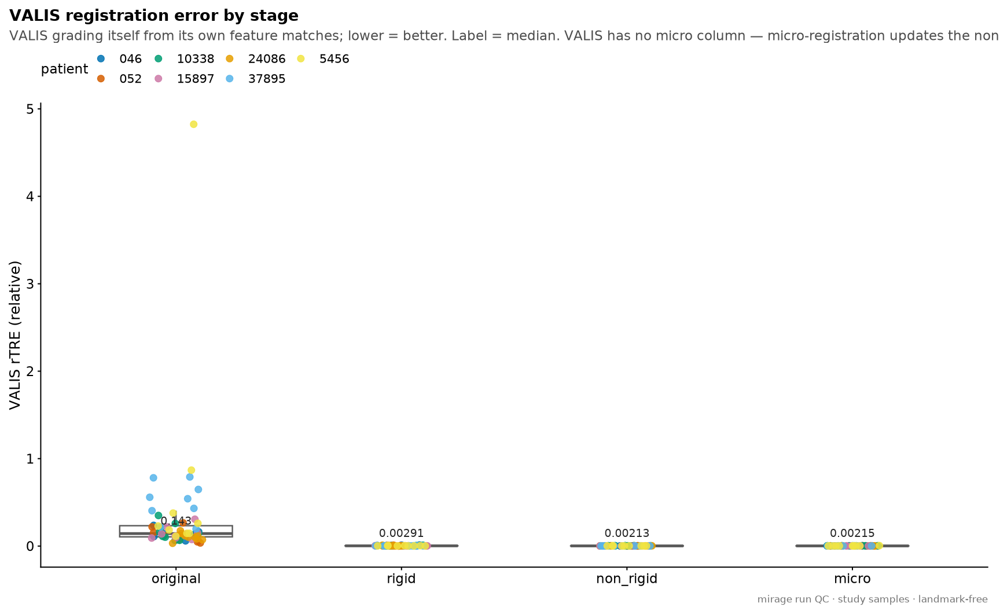
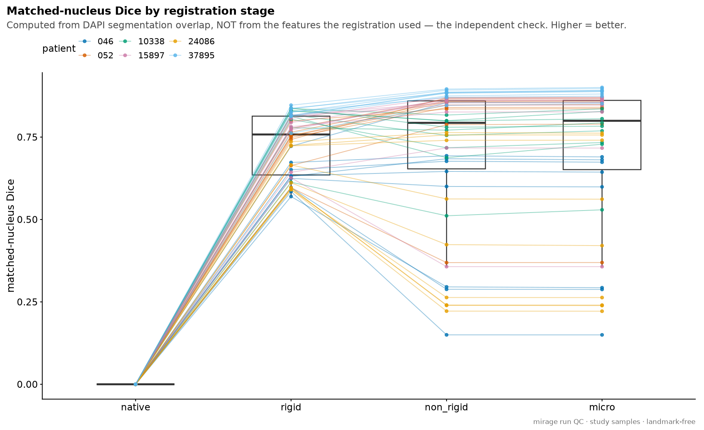
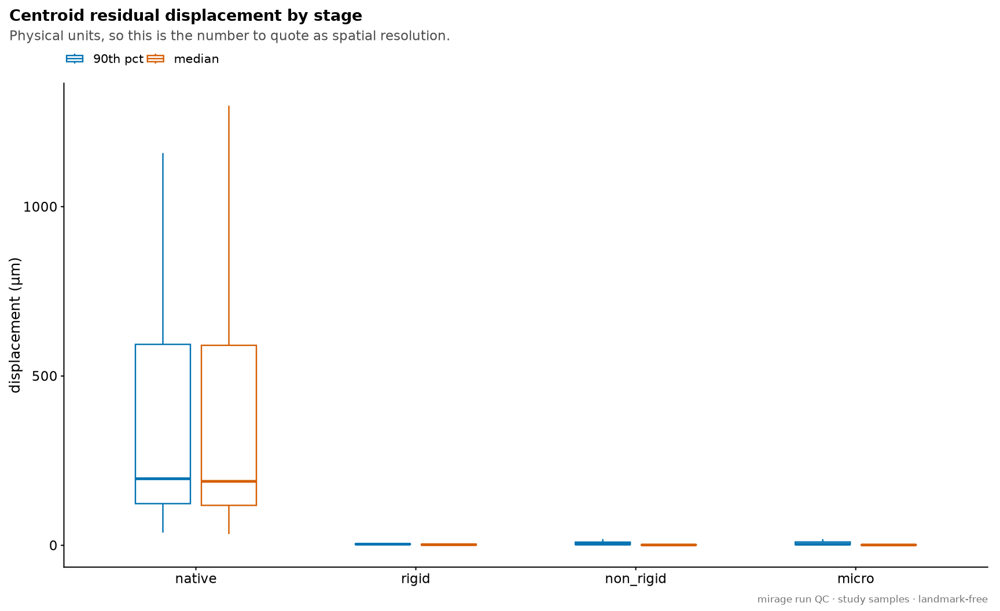
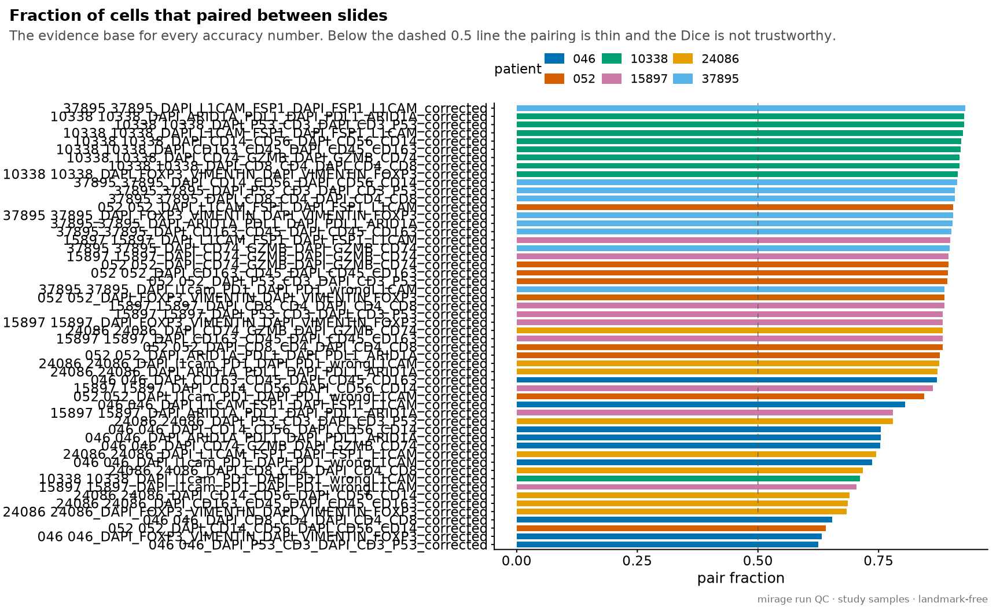

Last updated: 2026-08-12
Checks: 7 0
Knit directory: ihc_method/
This reproducible R Markdown analysis was created with workflowr (version 1.7.2). The Checks tab describes the reproducibility checks that were applied when the results were created. The Past versions tab lists the development history.
Great! Since the R Markdown file has been committed to the Git repository, you know the exact version of the code that produced these results.
Great job! The global environment was empty. Objects defined in the global environment can affect the analysis in your R Markdown file in unknown ways. For reproduciblity it’s best to always run the code in an empty environment.
The command set.seed(20260630) was run prior to running
the code in the R Markdown file. Setting a seed ensures that any results
that rely on randomness, e.g. subsampling or permutations, are
reproducible.
Great job! Recording the operating system, R version, and package versions is critical for reproducibility.
Nice! There were no cached chunks for this analysis, so you can be confident that you successfully produced the results during this run.
Great job! Using relative paths to the files within your workflowr project makes it easier to run your code on other machines.
Great! You are using Git for version control. Tracking code development and connecting the code version to the results is critical for reproducibility.
The results in this page were generated with repository version 9b19461. See the Past versions tab to see a history of the changes made to the R Markdown and HTML files.
Note that you need to be careful to ensure that all relevant files for
the analysis have been committed to Git prior to generating the results
(you can use wflow_publish or
wflow_git_commit). workflowr only checks the R Markdown
file, but you know if there are other scripts or data files that it
depends on. Below is the status of the Git repository when the results
were generated:
Ignored files:
Ignored: .RData
Ignored: .Rhistory
Ignored: .Rproj.user/
Ignored: data/
Ignored: output/figures/
Ignored: output/paired_deconv.rds
Ignored: renv/library/
Ignored: renv/staging/
Unstaged changes:
Modified: .gitignore
Modified: README.md
Note that any generated files, e.g. HTML, png, CSS, etc., are not included in this status report because it is ok for generated content to have uncommitted changes.
These are the previous versions of the repository in which changes were
made to the R Markdown (analysis/registration_run_qc.Rmd)
and HTML (docs/registration_run_qc.html) files. If you’ve
configured a remote Git repository (see ?wflow_git_remote),
click on the hyperlinks in the table below to view the files as they
were in that past version.
| File | Version | Author | Date | Message |
|---|---|---|---|---|
| Rmd | 1f3d09d | bolt3x | 2026-08-12 | :recycle: drop the mirage arm, fix the fig.path warning, retune the margin bands |
| Rmd | 360ee92 | bolt3x | 2026-08-12 | :recycle: reorganise the workflowr site into four ordered parts |
How well was this cohort registered and phenotyped? Everything here is measured on the real patient slides, by the pipeline, during the run that produced the cells the other pages analyse.
That is a different question from the one the benchmark pages answer.
Pipeline benchmarks and registration accuracy read the
tables mirage’s benchmarks/ sweep produces on
synthetic images — rescaled copies with a known
injected offset, run to measure cost and scaling. Useful for choosing
parameters, silent about your samples. This page reads
data/mirage/<patient>/ — the tree a mirage run writes
directly — so a run already copied in needs nothing further.
Where the numbers come from.
| artifact | what it is |
|---|---|
qc/registration/*_seg_qc.json |
staged segmentation-overlap QC
(reg_qc = 2): matched-nucleus Dice, per-pair IoU and
centroid residual, per moving slide per stage |
registered/summary/**/*.csv |
VALIS’s own error, written during
register() — rigid_D and
non_rigid_D (two metric columns, no micro column) plus
n_matches. Nextflow preserves REGISTER’s
preprocessed/data/ producer subdirectory on publish, so
these sit two levels down; the reader recurses |
qc/registration/*_tre.json |
STARE’s own TRE, when the tiled path ran — plus a per-tile spatial map |
Three signals, and only one comparison is meaningful. VALIS rTRE and STARE TRE are both intrinsic: each method grading itself, from the very features it registered on. They are not comparable to each other — only one of them ran — and neither is evidence on its own, because a method that aligned its own features well has demonstrated exactly that and nothing more. The segmentation-overlap Dice is computed from DAPI nuclei, not features, by a different method entirely, so it is the independent check on whichever intrinsic number this run has. §4 plots them against each other; a run where the self-report looks excellent and the overlap does not is the failure mode worth catching.
stage what the transform is at that point
----------- -----------------------------------------------------------
native none — the raw between-slide offset
rigid rigid only (post micro-rigid). THE ANCHOR: correspondences are
established once here and then held fixed, so every later change
is geometry rather than a different set of cells being paired
non_rigid rigid + the wave-1 non-rigid field
micro + the micro residual — what the pipeline actually shipsTwo traps in these files.
Two files, four stages, three columns — and the two files
are not two measurements of the same thing.
register_micro() re-runs measure_error() and
overwrites <name>_summary.csv,
composing the micro residual into the same displacement field.
<name>_summary_premicro.csv is a copy taken just
before that, and it is written only at
reg_micro_reg = 2 — below that
register_micro() never runs, so the plain summary already
is the pre-micro one.
Why there is no micro column. VALIS’s
error_df schema is from/filename,
rigid_D, non_rigid_D — that is the whole of
it. Micro-registration is not modelled as a fourth stage with its own
column; it is an update to the non-rigid field. So the
micro number does not live in a column at all: it lives in the
difference between the two files.
The stage axis is therefore recovered from which file a value came from, not from which column:
| stage | column | file |
|---|---|---|
rigid |
rigid_D |
final — unchanged by micro, so either file gives it |
non_rigid |
non_rigid_D |
pre-micro — the only file that still isolates it |
micro |
non_rigid_D |
final — same column, other file |
Two columns, two files, three stages. That is exactly the
reconstruction mirage’s own report performs
(bin/generate_qc_report.py:_RECONCILE_TRE_SOURCE), and it
sorts the two files purely on the _summary_premicro.csv
filename suffix.
It is also why reading the two files as “pre-micro” and “post-micro”
panels looked like a duplicate: rigid_D is the
same number in both, so one of two stages was drawn twice, and the one
that did differ was given the same label in both panels when the two
values are two different stages.
A blank micro stage is a claim, not a gap. With no
pre-micro file (reg_micro_reg < 2, the shipped default)
the final non_rigid_D is the pre-micro value, so
it becomes non_rigid and no micro box is
drawn. Drawing one anyway — a byte-for-byte duplicate of
non_rigid — would read as “micro bought nothing”,
which is a different statement from “micro did not run”. mirage
makes the same choice on the segmentation-overlap side: when
micro-registration is skipped, or raises and is caught, the QC omits the
stage rather than duplicating non_rigid.
STARE has no micro stage at all. The tiled backend
writes no registered/summary/*.csv, so it never reaches
this axis; its intrinsic TRE comes from *_tre.json in
pixels and is plotted on its own.
Pair fraction gates everything above it. A Dice computed over 30% of the cells is a Dice over a thin and probably biased subset. Read §3c before quoting any accuracy number from §3.
artifacts found — seg_qc: 216 rows | valis: 140 rows | stare: 0 rows | stare_tiles: 0 rows
registration path in this run: VALISOne row per moving slide at the final stage — the
alignment the cells were actually quantified on.
dice_matched is the matched-nucleus overlap and
disp_um_p50 the median centroid residual in microns, which
is the number to quote as the pipeline’s spatial resolution on this
cohort. pair_fraction is how much of the slide those two
are based on.
| patient_id | moving | final_stage | dice | disp_um_p50 | disp_um_p90 | pair_fraction | gain_vs_rigid_dice | gain_vs_rigid_um |
|---|---|---|---|---|---|---|---|---|
| 046 | 046_DAPI_FOXP3_VIMENTIN_DAPI_VIMENTIN_FOXP3_corrected | micro | 0.150 | 9.34 | 17.35 | 0.63 | -0.435 | 6.36 |
| 24086 | 24086_DAPI_CD14_CD56_DAPI_CD56_CD14_corrected | micro | 0.222 | 9.10 | 14.26 | 0.69 | -0.369 | 5.96 |
| 24086 | 24086_DAPI_CD163_CD45_DAPI_CD45_CD163_corrected | micro | 0.240 | 9.09 | 14.68 | 0.69 | -0.355 | 6.02 |
| 24086 | 24086_DAPI_FOXP3_VIMENTIN_DAPI_VIMENTIN_FOXP3_corrected | micro | 0.239 | 8.93 | 14.69 | 0.68 | -0.357 | 5.85 |
| 24086 | 24086_DAPI_CD8_CD4_DAPI_CD4_CD8_corrected | micro | 0.263 | 8.83 | 14.83 | 0.72 | -0.328 | 5.63 |
| 15897 | 15897_DAPI_l1cam_PD1_DAPI_PD1_wrongL1CAM_corrected | micro | 0.357 | 8.15 | 18.34 | 0.70 | -0.270 | 5.27 |
| 046 | 046_DAPI_CD8_CD4_DAPI_CD4_CD8_corrected | micro | 0.288 | 8.01 | 15.68 | 0.65 | -0.309 | 5.09 |
| 046 | 046_DAPI_P53_CD3_DAPI_CD3_P53_corrected | micro | 0.293 | 7.57 | 16.02 | 0.63 | -0.277 | 4.34 |
| 052 | 052_DAPI_CD14_CD56_DAPI_CD56_CD14_corrected | micro | 0.369 | 7.33 | 13.23 | 0.64 | -0.227 | 4.33 |
| 24086 | 24086_DAPI_L1CAM_FSP1_DAPI_FSP1_L1CAM_corrected | micro | 0.421 | 6.17 | 11.67 | 0.75 | -0.191 | 3.10 |
| 10338 | 10338_DAPI_l1cam_PD1_DAPI_PD1_wrongL1CAM_corrected | micro | 0.529 | 2.65 | 11.29 | 0.71 | -0.084 | -0.63 |
| 10338 | 10338_DAPI_ARID1A_PDL1_DAPI_PDL1_ARID1A_corrected | micro | 0.733 | 2.19 | 3.58 | 0.93 | -0.070 | 0.70 |
| 10338 | 10338_DAPI_FOXP3_VIMENTIN_DAPI_VIMENTIN_FOXP3_corrected | micro | 0.728 | 2.19 | 3.89 | 0.91 | -0.085 | 0.83 |
| 10338 | 10338_DAPI_CD8_CD4_DAPI_CD4_CD8_corrected | micro | 0.769 | 1.64 | 3.34 | 0.92 | -0.049 | 0.35 |
| 24086 | 24086_DAPI_P53_CD3_DAPI_CD3_P53_corrected | micro | 0.562 | 1.62 | 27.71 | 0.78 | -0.104 | -0.96 |
| 10338 | 10338_DAPI_L1CAM_FSP1_DAPI_FSP1_L1CAM_corrected | micro | 0.783 | 1.55 | 3.11 | 0.92 | -0.055 | 0.40 |
| 046 | 046_DAPI_l1cam_PD1_DAPI_PD1_wrongL1CAM_corrected | micro | 0.599 | 1.50 | 9.97 | 0.74 | -0.026 | -1.44 |
| 10338 | 10338_DAPI_CD74_GZMB_DAPI_GZMB_CD74_corrected | micro | 0.793 | 1.39 | 3.07 | 0.92 | 0.015 | -0.29 |
| 10338 | 10338_DAPI_CD14_CD56_DAPI_CD56_CD14_corrected | micro | 0.806 | 1.32 | 2.83 | 0.92 | -0.025 | 0.11 |
| 24086 | 24086_DAPI_l1cam_PD1_DAPI_PD1_wrongL1CAM_corrected | micro | 0.741 | 1.22 | 5.45 | 0.88 | 0.017 | -0.73 |
| 046 | 046_DAPI_CD74_GZMB_DAPI_GZMB_CD74_corrected | micro | 0.644 | 1.13 | 9.44 | 0.75 | 0.011 | -1.77 |
| 24086 | 24086_DAPI_CD74_GZMB_DAPI_GZMB_CD74_corrected | micro | 0.756 | 1.11 | 5.10 | 0.88 | 0.032 | -0.85 |
| 046 | 046_DAPI_L1CAM_FSP1_DAPI_FSP1_L1CAM_corrected | micro | 0.690 | 1.10 | 10.10 | 0.80 | 0.017 | -1.46 |
| 15897 | 15897_DAPI_ARID1A_PDL1_DAPI_PDL1_ARID1A_corrected | micro | 0.717 | 1.07 | 7.52 | 0.78 | 0.073 | -1.89 |
| 10338 | 10338_DAPI_CD163_CD45_DAPI_CD45_CD163_corrected | micro | 0.828 | 1.06 | 2.53 | 0.92 | -0.001 | -0.15 |
| 24086 | 24086_DAPI_ARID1A_PDL1_DAPI_PDL1_ARID1A_corrected | micro | 0.762 | 1.06 | 4.94 | 0.87 | 0.026 | -0.78 |
| 10338 | 10338_DAPI_P53_CD3_DAPI_CD3_P53_corrected | micro | 0.836 | 1.01 | 2.39 | 0.93 | -0.001 | -0.12 |
| 046 | 046_DAPI_CD14_CD56_DAPI_CD56_CD14_corrected | micro | 0.674 | 0.97 | 8.86 | 0.75 | 0.023 | -1.81 |
| 046 | 046_DAPI_ARID1A_PDL1_DAPI_PDL1_ARID1A_corrected | micro | 0.681 | 0.96 | 8.63 | 0.75 | 0.050 | -1.99 |
| 15897 | 15897_DAPI_P53_CD3_DAPI_CD3_P53_corrected | micro | 0.847 | 0.78 | 2.37 | 0.88 | 0.033 | -0.36 |
| 15897 | 15897_DAPI_CD74_GZMB_DAPI_GZMB_CD74_corrected | micro | 0.854 | 0.75 | 2.20 | 0.89 | 0.037 | -0.39 |
| 15897 | 15897_DAPI_CD14_CD56_DAPI_CD56_CD14_corrected | micro | 0.826 | 0.74 | 3.14 | 0.86 | 0.045 | -0.66 |
| 052 | 052_DAPI_l1cam_PD1_DAPI_PD1_wrongL1CAM_corrected | micro | 0.789 | 0.72 | 6.13 | 0.84 | 0.126 | -1.91 |
| 37895 | 37895_DAPI_l1cam_PD1_DAPI_PD1_wrongL1CAM_corrected | micro | 0.852 | 0.72 | 2.29 | 0.89 | 0.090 | -1.12 |
| 15897 | 15897_DAPI_L1CAM_FSP1_DAPI_FSP1_L1CAM_corrected | micro | 0.860 | 0.70 | 2.10 | 0.90 | 0.084 | -0.94 |
| 052 | 052_DAPI_CD8_CD4_DAPI_CD4_CD8_corrected | micro | 0.840 | 0.69 | 2.70 | 0.88 | 0.092 | -1.14 |
| 15897 | 15897_DAPI_CD8_CD4_DAPI_CD4_CD8_corrected | micro | 0.862 | 0.67 | 2.10 | 0.89 | 0.068 | -0.74 |
| 052 | 052_DAPI_ARID1A_PDL1_DAPI_PDL1_ARID1A_corrected | micro | 0.836 | 0.63 | 2.93 | 0.88 | 0.038 | -0.61 |
| 052 | 052_DAPI_CD74_GZMB_DAPI_GZMB_CD74_corrected | micro | 0.858 | 0.63 | 2.22 | 0.89 | 0.104 | -1.14 |
| 15897 | 15897_DAPI_FOXP3_VIMENTIN_DAPI_VIMENTIN_FOXP3_corrected | micro | 0.867 | 0.63 | 2.02 | 0.88 | 0.095 | -1.02 |
| 052 | 052_DAPI_L1CAM_FSP1_DAPI_FSP1_L1CAM_corrected | micro | 0.862 | 0.62 | 2.13 | 0.90 | 0.097 | -1.07 |
| 15897 | 15897_DAPI_CD163_CD45_DAPI_CD45_CD163_corrected | micro | 0.871 | 0.62 | 1.96 | 0.88 | 0.063 | -0.67 |
| 37895 | 37895_DAPI_ARID1A_PDL1_DAPI_PDL1_ARID1A_corrected | micro | 0.881 | 0.61 | 1.82 | 0.90 | 0.068 | -0.76 |
| 37895 | 37895_DAPI_CD74_GZMB_DAPI_GZMB_CD74_corrected | micro | 0.874 | 0.61 | 1.90 | 0.90 | 0.048 | -0.59 |
| 046 | 046_DAPI_CD163_CD45_DAPI_CD45_CD163_corrected | micro | 0.855 | 0.59 | 2.54 | 0.87 | 0.133 | -1.55 |
| 052 | 052_DAPI_FOXP3_VIMENTIN_DAPI_VIMENTIN_FOXP3_corrected | micro | 0.849 | 0.56 | 2.56 | 0.89 | 0.095 | -1.21 |
| 052 | 052_DAPI_P53_CD3_DAPI_CD3_P53_corrected | micro | 0.867 | 0.56 | 2.08 | 0.89 | 0.090 | -0.97 |
| 37895 | 37895_DAPI_P53_CD3_DAPI_CD3_P53_corrected | micro | 0.889 | 0.56 | 1.69 | 0.91 | 0.074 | -0.80 |
| 37895 | 37895_DAPI_FOXP3_VIMENTIN_DAPI_VIMENTIN_FOXP3_corrected | micro | 0.892 | 0.54 | 1.63 | 0.90 | 0.067 | -0.73 |
| 37895 | 37895_DAPI_L1CAM_FSP1_DAPI_FSP1_L1CAM_corrected | micro | 0.888 | 0.54 | 1.67 | 0.93 | 0.050 | -0.61 |
| 052 | 052_DAPI_CD163_CD45_DAPI_CD45_CD163_corrected | micro | 0.870 | 0.53 | 2.04 | 0.89 | 0.128 | -1.34 |
| 37895 | 37895_DAPI_CD163_CD45_DAPI_CD45_CD163_corrected | micro | 0.891 | 0.52 | 1.64 | 0.90 | 0.076 | -0.83 |
| 37895 | 37895_DAPI_CD8_CD4_DAPI_CD4_CD8_corrected | micro | 0.898 | 0.50 | 1.55 | 0.91 | 0.062 | -0.67 |
| 37895 | 37895_DAPI_CD14_CD56_DAPI_CD56_CD14_corrected | micro | 0.901 | 0.49 | 1.49 | 0.91 | 0.054 | -0.59 |
Each figure is preceded by its derivation note. A figure whose artifact this run did not produce is simply absent — a VALIS run has no §2, a tiled run has no §1.
VALIS’s own error across original → rigid →
non_rigid → micro, one box per stage with
every slide overlaid and the median printed. rTRE is
relative to the image diagonal (unitless, comparable across slide
sizes); some builds emit raw *_D distances instead.
Intrinsic — VALIS scoring its own feature matches. The
four stages come from three columns across two files:
non_rigid from the pre-micro summary, micro
from the final one (same column, micro composed in). A missing
micro box means reg_micro_reg < 2 and
micro-registration never ran.

Matched-nucleus Dice per stage, from
qc/registration/*_seg_qc.json. Computed by warping each
slide’s natively-segmented DAPI nuclei and measuring overlap — it does
not use the features the registration was fitted on, which is what makes
it the independent check. Correspondences are fixed at the rigid anchor,
so a change between stages is geometry, not a different set of
pairs.

Matched-nucleus centroid residual in microns
(displacement_um_p50/_p90). Physical units, so
this is the figure to quote as the pipeline’s spatial resolution on this
cohort — and to compare against cell diameter when deciding whether
per-cell marker assignment across cycles is trustworthy.

The fraction of cells that paired between the two slides, per moving slide. Every Dice and displacement above is computed over this subset. Below the dashed 0.5 line the pairing is thin and probably biased toward the well-aligned regions, which flatters the accuracy numbers.

<outdir>/qc/) with the preprocessing, registration
and segmentation images. This page is the numeric
complement: it is what you can tabulate, compare across patients and
carry into the analysis pages, not what you eyeball.
R version 4.3.2 (2023-10-31)
Platform: x86_64-pc-linux-gnu (64-bit)
Running under: Rocky Linux 9.5 (Blue Onyx)
Matrix products: default
BLAS/LAPACK: FlexiBLAS OPENBLAS; LAPACK version 3.11.0
locale:
[1] LC_CTYPE=C.UTF-8 LC_NUMERIC=C LC_TIME=C.UTF-8
[4] LC_COLLATE=C.UTF-8 LC_MONETARY=C.UTF-8 LC_MESSAGES=C.UTF-8
[7] LC_PAPER=C.UTF-8 LC_NAME=C LC_ADDRESS=C
[10] LC_TELEPHONE=C LC_MEASUREMENT=C.UTF-8 LC_IDENTIFICATION=C
time zone: Europe/Rome
tzcode source: system (glibc)
attached base packages:
[1] stats graphics grDevices datasets utils methods base
other attached packages:
[1] fs_2.1.0 jsonlite_2.0.0 here_1.0.2 lubridate_1.9.5
[5] forcats_1.0.1 stringr_1.6.0 dplyr_1.2.1 purrr_1.2.2
[9] readr_2.2.0 tidyr_1.3.2 tibble_3.3.1 ggplot2_4.0.3
[13] tidyverse_2.0.0 workflowr_1.7.2
loaded via a namespace (and not attached):
[1] sass_0.4.10 generics_0.1.4 renv_1.2.3 stringi_1.8.7
[5] hms_1.1.4 digest_0.6.39 magrittr_2.0.5 timechange_0.4.0
[9] evaluate_1.0.5 grid_4.3.2 RColorBrewer_1.1-3 fastmap_1.2.0
[13] rprojroot_2.1.1 processx_3.9.0 whisker_0.4.1 ps_1.9.3
[17] promises_1.5.0 httr_1.4.7 scales_1.4.0 jquerylib_0.1.4
[21] cli_3.6.6 crayon_1.5.3 rlang_1.2.0 bit64_4.8.2
[25] withr_3.0.3 cachem_1.1.0 yaml_2.3.12 otel_0.2.0
[29] parallel_4.3.2 tools_4.3.2 tzdb_0.5.0 httpuv_1.6.12
[33] vctrs_0.7.3 R6_2.6.1 lifecycle_1.0.5 git2r_0.33.0
[37] bit_4.6.0 vroom_1.7.1 pkgconfig_2.0.3 callr_3.7.6
[41] pillar_1.11.1 bslib_0.9.0 later_1.4.8 gtable_0.3.6
[45] glue_1.8.1 Rcpp_1.1.1-1.1 xfun_0.58 tidyselect_1.2.1
[49] rstudioapi_0.15.0 knitr_1.51 farver_2.1.2 htmltools_0.5.9
[53] labeling_0.4.3 rmarkdown_2.31 compiler_4.3.2 getPass_0.2-4
[57] S7_0.2.2